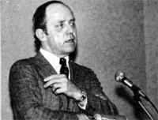
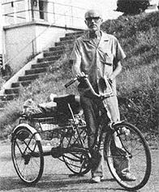

In celebration of folks involved in MOTHER-type doings around the world.
Last spring, 27 of West Germany's Greens-a group of environmentalists and antinuclear activists-were elected to the national legislature (the Bundestag). Now, the ecologically oriented Green Party is emerging on the United States political scene, and it has the backing of former California Secretary of Resources Huey D. Johnson. Huey plans to raise $500,000 seed money for the party, and hopes that the Greens will have an impact on the 1984 presidential election (they'll support the candidate whose views most closely correspond with their party's principles).
Johnson is optimistic that the growth, recognition, and acceptance of the Green Party in the U.S. will help to bring about some much-needed changes in government policy. Huey believes that the land is the basis of all wealth, and that national survival depends-to a large extent-on how we manage our natural resources. (As the head of his state's Resources Agency, the dedicated environmentalist was responsible for opening 400 miles of spawning streams for salmon and steelhead--which had been closed for a century-and worked for the development of a "desalter" that could be used to make agricultural wastewater suitable for use in irrigation.)
Huey would like to see a decrease in the military budget, with the resulting funds used to "do something for the human spirit . . . provide homes, health care, and education". If Johnson and the Greens have their way, a genuine concern for the quality of people's lives will be "part of the total picture".
-Cynthia F. Lambert.
ANNE HAUSRATH AND DIANE JONES:QUILTING FOR PEACE
Boise, Idaho residents Anne Hausrath and Diane Jones resolved to take an active part in the promotion of world peace, and the Boise Peace Quilt Project was conceived. Taking to heart the suggestion that "making friends with a Russian" might be a step toward peace, Anne and Diane decided to produce a quilt to be given to the people of a Soviet city. The two women invited others to join in the project, and they soon had a group of 35 eager quilters. Several months later-on May 25, 1982-the first peace quilt was presented to the Russian embassy. The carefully made patchwork was later displayed in Moscow by the Soviet Women's Committee, and now rests in its permanent home, Alytus, Lithuania. The Women's Soviet, Lithuania S.S.R. wrote that the quilt "excites us very much and makes us happy because our women . . . are also striving for peace and friendship".
The Boise project is still going strong. A quilt has been presented to Norman Cousins in recognition of his work toward peace, and one was recently fashioned for the people of Hiroshima, Japan. Public response to the group's work has been very enthusiastic, and at least three other peace-quilting teams have been organized in different parts of the U.S. In fact, a San Carlos, California woman (who started a project in her own community) is wondering if the handmade quilt might become "a symbol of peace and negotiation in the way that the bell has long been a symbol of independence and the cry for freedom". The Boise quilters would like that Paige Boule.
MARVIN AYLESWORTH: TRICYCLE TRAVELER
In June of 1982, Marvin Aylesworth mounted his tricycle in Plant City, Florida and began a journey across the southeastern United States. Today, Marvin is still pedaling . . . and plans to continue his travels indefinitely.
The 57-year-old Aylesworth has a message for Americans: Let go of fear. He believes that we are being crippled by an increasingly strong-and often unfounded sense of fear, and he wants us to free ourselves. "All you hear is fear," says Marvin, and he claims that, consequently, we are all becoming reluctant "to recognize anyone in distress". Instead of extending a helping hand, we tend to look the other way. Ayles-worth notes that he has not been mugged or treated with any contempt since he started his tricycle trip, and sees this as an indication that the world is not in as sad a state as some may think.
Marvin-who has previously earned his living by doing farm labor and by caring for invalidsis a profile artist, and supports himself with the small donations he receives from the folks he sketches. (The long-distance pedaler insists that he needs very little and is able to manage on $1.00 to $1.50 daily.) Aylesworth's determination to spread his message is kept strong by his belief in humanity and, he adds, by his "faith in God".-DM.
IN BRIEF
. . . ANTHONY CHESSICK believes that our dollar-based economy encourages greed, and he'd like to see an alternative system in which essential human needs are provided for through bartering. Chessick also feels that people who are poor-in terms of the dollar have the capacity for creating much true "wealth", but that the present economic system discourages them from doing so. To put forth his ideas, Anthony has published a pamphlet, "Grass-Roots Intra Economies", in which he expresses faith that the right conditions will prompt people to replace greed and selfishness with a spirit of giving. For a copy of the pamphlet, write Anthony V. Chessick, Dept. TMEN, 1111 Seventh Street South, Minneapolis, Minnesota 55415. (To help defray costs, please send $1.00 or a voucher for a dollar's worth of goods or services.)
LAURA HUXLEY, widow of English novelist Aldous Huxley, is concerned about young children who do not receive sufficient attention and affection. She believes that a lack of cuddling in early childhood can lead to the inability to experience pleasure in adulthood . . . and that this can be so frustrating as to result in violence. Laura thus feels we must become better parents in order to contribute to a more peaceful world. Huxley's beliefs led to the establishment of Our Ultimate Investment, a nonprofit organization that has a program aimed at providing human warmth and love . . . not only for the very young, but also for the elderly. "Caressing rooms" are set up where parents can leave their infants-for an hour or two-to be held and cared for by senior citizens. A few such centers are now in operation, and Laura dreams of the time when every block of every city will have its own caressing room.
KATHY HOSHIJO, star of the public television show Kathy's Kitchen, has been compared with the famous chef Julia Child. But Hoshijo, whose recipes call for only natural ingredients and no meat, notes that there is an important difference between herself and Child: While Julia often encourages people to fix dishes that some natural foods advocates believe contribute to poor health, and which sometimes incorporate products that are manufactured at the expense of the environment, Kathy urges her viewers to prepare meals that are healthful and "ecologically sound".
-DM.
|
 PHOTO BY BOB HARTMAN |
 STAFF PHOTOS |
|